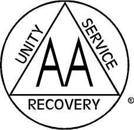

<center><b><font size="+2">

Alcoholics Anonymous<br/>
</font>
District 14<br/>
<font size="+3">
Meeting Schedule<br/>
</font>
North Central Florida Intergroup<br/>
Land Title Plaza<br/>
2832 NW 43 St. Bld. 1000 Suite 1182<br/>
<font size="+2">
Office & A.A. Hotline 352-372-8091<br/>
</font><font size="-1">
Office Hours: Monday-Wednesday 2:00-5:00pm<br/>
Thursday & Friday 2:00-6:00pm<br/>
Saturday 11:00am-2:00pm</font><br/>
For the latest meeting list see:<br/>
<u>aagainesville.org/meetings</u><br/><br/>
<font size="-1">
O&mdash;Open, anyone can attend;<br/>
C&mdash;Closed, only requirement is a desire to stop drinking;<br/>
D&mdash;Discussion; S&mdash;Speaker; M&mdash;Meditation;<br/>
BB&mdash;Big Book Study; SS&mdash;Step Study<br/>
Lit&mdash;Other AA Literature; BG&mdash;Beginners;<br/>
WC&mdash;Wheelchair Accessible; NC&mdash;No Children;<br/>
CF&mdash;Child friendly<br/><br/></font></b>
</center>